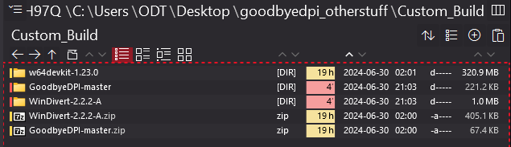

GDPI seems to be having issues since yesterday in UAE. Still works but it’s struggling (random SSL errors).
anyone else facing the same thing or is it just me? Tested on Windows/MacOS/iOS using similar programs and techniques and I see issues everywhere.
@toodle has provided PCAP dumps, and it looks very similar to Saudi Arabia (probably the same DPI manufacturer, ntc.party is blocked as well).
Workaround as for now:
goodbyedpi.exe -6 -e 130
It will work only for Firefox though.
and why would it work only on firefox and nowhere else?
Because Chromium-based browsers randomize TLS extension order, while Firefox does not.
Try this one
goodbyedpi.exe -6 --frag-by-sni
You still need to disable Kyber, as there’s no segment reassembly.
chrome://flags → kyber → disable
thanks. works on chrome now.
goodbyedpi.exe -6 -e 130 works for some sites, but not others. Specifically https://www.redgifs.com/ seems to not be working. And goodbyedpi.exe -6 --frag-by-sni doesn’t seem to be working at all. I get this error:
unknown option -- frag-by-sni
Usage: goodbyedpi.exe [OPTION...]
-p block passive DPI
-r replace Host with hoSt
-s remove space between host header and its value
-a additional space between Method and Request-URI (enables -s, may break sites)
-m mix Host header case (test.com -> tEsT.cOm)
-f <value> set HTTP fragmentation to value
-k <value> enable HTTP persistent (keep-alive) fragmentation and set it to value
-n do not wait for first segment ACK when -k is enabled
-e <value> set HTTPS fragmentation to value
-w try to find and parse HTTP traffic on all processed ports (not only on port 80)
--port <value> additional TCP port to perform fragmentation on (and HTTP tricks with -w)
--ip-id <value> handle additional IP ID (decimal, drop redirects and TCP RSTs with this ID).
--dns-addr <value> redirect UDPv4 DNS requests to the supplied IPv4 address (experimental)
--dns-port <value> redirect UDPv4 DNS requests to the supplied port (53 by default)
--dnsv6-addr <value> redirect UDPv6 DNS requests to the supplied IPv6 address (experimental)
--dnsv6-port <value> redirect UDPv6 DNS requests to the supplied port (53 by default)
--dns-verb print verbose DNS redirection messages
--blacklist <txtfile> perform circumvention tricks only to host names and subdomains from
supplied text file (HTTP Host/TLS SNI).
This option can be supplied multiple times.
--allow-no-sni perform circumvention if TLS SNI can't be detected with --blacklist enabled.
--set-ttl <value> activate Fake Request Mode and send it with supplied TTL value.
DANGEROUS! May break websites in unexpected ways. Use with care (or --blacklist).
--auto-ttl [a1-a2-m] activate Fake Request Mode, automatically detect TTL and decrease
it based on a distance. If the distance is shorter than a2, TTL is decreased
by a2. If it's longer, (a1; a2) scale is used with the distance as a weight.
If the resulting TTL is more than m(ax), set it to m.
Default (if set): --auto-ttl 1-4-10. Also sets --min-ttl 3.
DANGEROUS! May break websites in unexpected ways. Use with care (or --blacklist).
--min-ttl <value> minimum TTL distance (128/64 - TTL) for which to send Fake Request
in --set-ttl and --auto-ttl modes.
--wrong-chksum activate Fake Request Mode and send it with incorrect TCP checksum.
May not work in a VM or with some routers, but is safer than set-ttl.
Could be combined with --set-ttl
--wrong-seq activate Fake Request Mode and send it with TCP SEQ/ACK in the past.
--native-frag fragment (split) the packets by sending them in smaller packets, without
shrinking the Window Size. Works faster (does not slow down the connection)
and better.
--reverse-frag fragment (split) the packets just as --native-frag, but send them in the
reversed order. Works with the websites which could not handle segmented
HTTPS TLS ClientHello (because they receive the TCP flow "combined").
--max-payload [value] packets with TCP payload data more than [value] won't be processed.
Use this option to reduce CPU usage by skipping huge amount of data
(like file transfers) in already established sessions.
May skip some huge HTTP requests from being processed.
Default (if set): --max-payload 1200.
LEGACY modesets:
-1 -p -r -s -f 2 -k 2 -n -e 2 (most compatible mode)
-2 -p -r -s -f 2 -k 2 -n -e 40 (better speed for HTTPS yet still compatible)
-3 -p -r -s -e 40 (better speed for HTTP and HTTPS)
-4 -p -r -s (best speed)
Modern modesets (more stable, more compatible, faster):
-5 -f 2 -e 2 --auto-ttl --reverse-frag --max-payload (this is the default)
-6 -f 2 -e 2 --wrong-seq --reverse-frag --max-payload
I’m on Firefox 126.0.1 and GoodbyeDPI v0.2.2.
You need to build from source, v0.2.2 (Mar 21 2022) doesn’t have the --frag-by-sni option (~3 days ago)
If you read path\to\ then you have to replace that part with the actual path to the folder because that wouldn’t work.
Prerequisites
Assuming you’re on windows you just need to get w64devkit, GoodbyeDPI-master, and WinDivert 2.2.2-A
Extract all of these to their own folders and make note of their names, then add w64devkit/bin to your PATH (refer to the next step/dropdown)
{kind=link}
{kind=link}
{kind=link}
Building GoodbyeDPI
Open up CMD as an administrator and run
cd path\to\GoodbyeDPI-master\src
Then run
make CPREFIX=x86_64-w64-mingw32- BIT64=1 WINDIVERTHEADERS=path\to\windivert\include WINDIVERTLIBS=path\to\windivert\amd64
If there weren’t any issues it should have resulted in a goodbyedpi.exe file being made in GoodbyeDPI-master\src, you want to copy goodbyedpi.exe, WinDivert.dll and WinDivert64.sys over to your existing installation of GoodbyeDPI v0.2.2 and replace all in the x86_64 folder.
Now you should be able to use --frag-by-sni
Sorry for any bad writing/incorrect information, I’d wrote this based off of what I’d did
ValdikSS, а у этого параметра --frag-by-sni вообще нет значений? Просто использовать как есть?
Я думаю, вы можете использовать его как есть, без дополнительных значений (см. скриншот выше). Translated using DeepL
Hi! Sorry about the late reply. I finally got some time to try this out. Everything seemed to work right up until I actually ran the new goodbyedpi.exe file with this command goodbyedpi.exe -6 --frag-by-sni. I get this error:
Block passive: 0
Fragment HTTP: 2
Fragment persistent HTTP: 2
Fragment HTTPS: 2
Fragment by SNI: 1
Native fragmentation (splitting): 1
Fragments sending in reverse: 1
hoSt: 0
Host no space: 0
Additional space: 0
Mix Host: 0
HTTP AllPorts: 0
HTTP Persistent Nowait: 1
DNS redirect: 0
DNSv6 redirect: 0
Allow missing SNI: 0
Fake requests, TTL: fixed (fixed: 0, auto: 0-0-0, min distance: 0)
Fake requests, wrong checksum: 0
Fake requests, wrong SEQ/ACK: 1
Max payload size: 1200
Opening filter
Error opening filter: The system cannot find the file specified.
I followed all the steps exactly, and didn’t get any errors.
The only thing I differed on from what you did is that I didn’t have a " \windivert\amd64", I had a “\windivert\x64” folder instead. I assumed it was the same thing with a different name, so I used that. It seemed to have compiled just fine.
Can you send me a picture of your folder structure?
example,
Here you go:
Can you go ahead and move “licenses”, “x86”, “BACKUP x86_64” and “Custom_Build” out of the folder, and make sure the contents of “x86_64” are the same as this picture below:
The three files in the screenshot above are from the newly compiled version from the github, try again after doing what I’d said above
Tell me if it had worked, thanks 
I’m still getting the same error, unfortunately.
This is what my x86_64 folder looks like:
This is what the parent folder looks like:

I’m sorry it didn’t work, could you send me an image of the .cmd you’re running to get GoodbyeDPI up? Thanks
Here you go:
{kind=link}
The exact steps are:
- cd to the directory that holds the newly compiled goodbyedpi.exe file, AKA
goodbyedpi-0.2.2\x86_64\ - Run the command
goodbyedpi.exe -6 --frag-by-sni
I also redid all the steps to compile the exe again, just in case. Here’s what I did:
- Extracted
w64devkit-1.23.0.zip,GoodbyeDPI-master.zip, andWinDivert-2.2.2-A.zip—gotten from the provided links—into this pathC:\Users\ODT\Desktop\goodbyedpi_otherstuff\Custom_Build
 - Made sure w64devkit/bin has been added to the system PATH.
- Opened up CMD as an administrator and cd’d into
C:\Users\ODT\Desktop\goodbyedpi_otherstuff\Custom_Build\GoodbyeDPI-master\src
- Ran the
make CPREFIX=x86_64-w64-mingw32- BIT64=1 WINDIVERTHEADERS=path\to\windivert\include WINDIVERTLIBS=path\to\windivert\amd64command, making sure to change the path\to\ sections so that they point to the right directories in my drive. Full command:make CPREFIX=x86_64-w64-mingw32- BIT64=1 WINDIVERTHEADERS=C:\Users\ODT\Desktop\goodbyedpi_otherstuff\Custom_Build\WinDivert-2.2.2-A\include WINDIVERTLIBS=C:\Users\ODT\Desktop\goodbyedpi_otherstuff\Custom_Build\WinDivert-2.2.2-A\x64 - Got this output from CMD and a “goodbyedpi.exe” file was created in
C:\Users\ODT\Desktop\goodbyedpi_otherstuff\Custom_Build\GoodbyeDPI-master\src
- I then moved
goodbyedpi.exefromC:\Users\ODT\Desktop\goodbyedpi_otherstuff\Custom_Build\GoodbyeDPI-master\srcandWinDivert.dllandWinDivert64.sysfromC:\Users\ODT\Desktop\goodbyedpi_otherstuff\Custom_Build\WinDivert-2.2.2-A\x64intoC:\Users\ODT\Desktop\goodbyedpi-0.2.2\x86_64, replacing what was already there.
- I then cd into
C:\Users\ODT\Desktop\goodbyedpi-0.2.2\x86_64using a CMD instance with admin privileges. - And run this command
goodbyedpi.exe -6 --frag-by-sni, to which I get the same error.
{kind=link}
{kind=link}
{kind=link}
Not sure if any of this helps, but I thought it couldn’t hurt.
old version still works?
Thanks for walking me through what you did so extensively. I redid everything you’d done, and I’m getting GoodbyeDPI working correctly on 3 systems (W10 Pro, W11 Pro, and W10 Enterprise LTSC). Can you make sure your antivirus isn’t messing with anything (like this)? Maybe reboot and see if that helps.
Send me a personal message if it keeps erroring out; I don’t want to bloat this thread  .
.
No, it’s not needed. The binaries are available with the link (at the bottom).
@Chriscrisis42 Try this, my bad